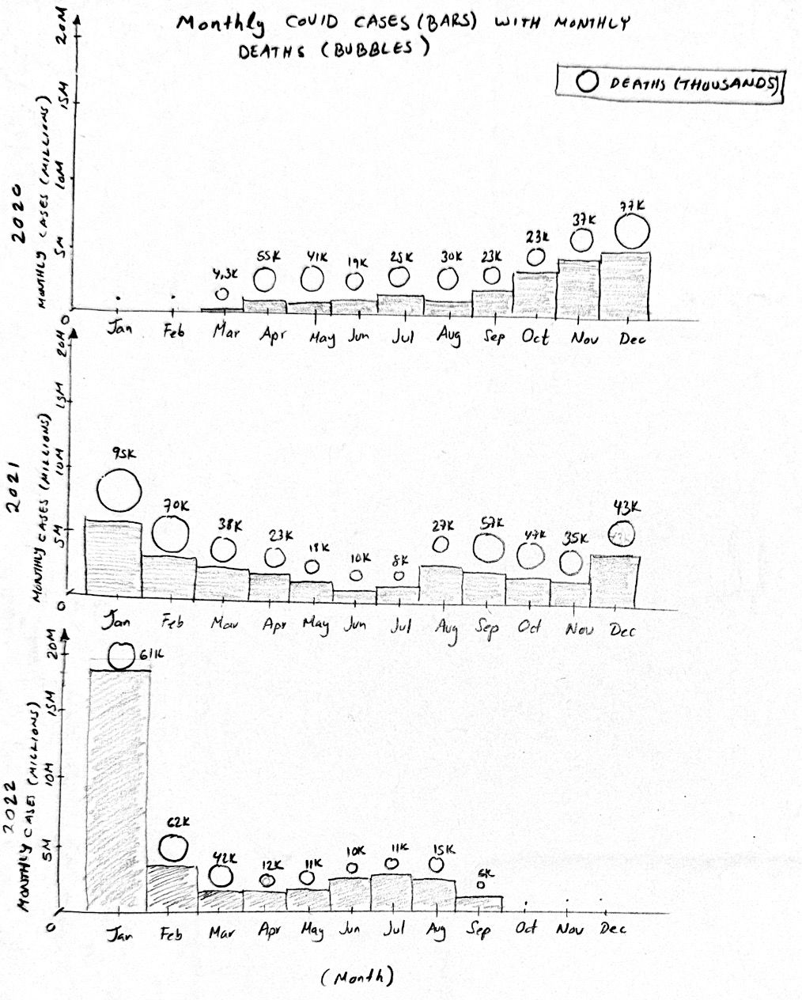
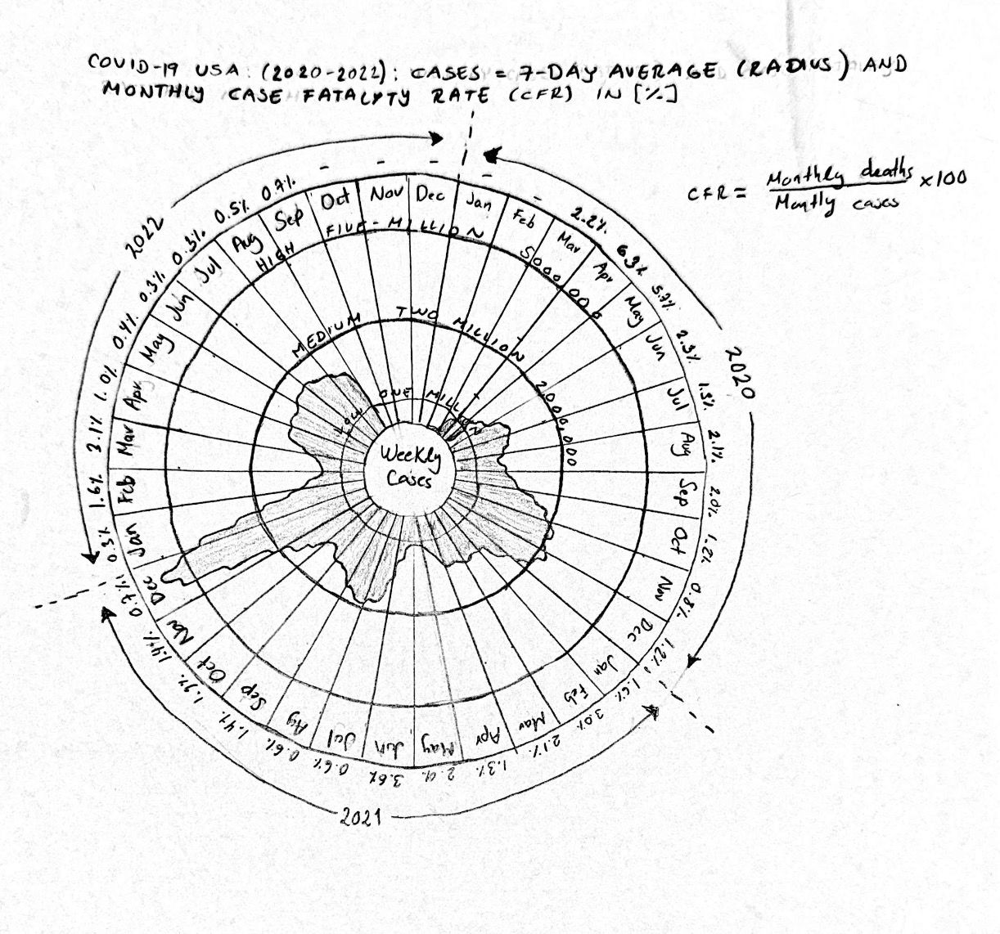

Reading & Critique

Insights about the data/visualization:
- Strong seasonality: the largest surges occur around winter (roughly Dec–Jan), suggesting recurring seasonal waves.
- Extreme early-2022 spike: the outermost segment rises sharply in Jan 2022, indicating a much larger wave than earlier years (Omicron).
- Multiple waves in 2021: the 2021 loop shows several distinct rises (mid-year and late-year), rather than a single peak.
Design Critique:
The spiral form is expressive for communicating cyclicality: mapping the calendar onto a circular layout makes it easy to notice that waves tend to recur at similar times of year, and the use of a smoothed trend line helps reveal the underlying pattern amid noisy daily reporting. The design is visually engaging and supports a narrative goal suited to a general-audience piece, making the winter surge feel salient and memorable.
However, the polar encoding makes precise comparisons difficult. Distances along the radial axis are harder to judge than a standard linear scale, and comparing the same month across years requires comparing values at different radii, which can obscure magnitude differences. The band around the curve can also be ambiguous for non-expert readers (it is not immediately clear what range or uncertainty it represents), and the visualization provides limited quantitative anchors to help estimate values. A redesign could preserve the seasonality insight while improving scale readability, clarifying encodings with stronger legends/labels, and adding context (e.g., deaths or CFR) to support interpretation beyond case counts alone.
Visualization Sketches

Design Rationale for Sketch 1:
- I replaced the polar layout with a linear timeline to improve magnitude comparability and make it easier to locate specific time periods.
- The 7-day moving average reduces daily reporting noise and mitigates negative corrections in the dataset.
- This design emphasizes clear quantitative reading of peaks/troughs, but downplays the circular seasonality narrative that the original spiral highlights.

Design Rationale for Sketch 2:
- I aggregated to monthly totals to reduce daily volatility and make seasonal patterns easier to compare.
- Small multiples preserve within-year seasonality while enabling direct year-to-year comparisons on a consistent scale.
- Bubbles plus numeric labels communicate deaths alongside cases, adding severity context without introducing a potentially confusing secondary y-axis for deaths.

Design Rationale for Sketch 3:
- I retained the polar structure to preserve the strong seasonal narrative of the original, while explicitly separating 2020, 2021, and 2022 and marking month boundaries.
- Reference circles (1M, 2M, 5M cases) reduce ambiguity in reading radial magnitude and support more quantitative interpretation.
- I added CFR as an outer annotation layer to reflect severity, but this increases information density and requires careful design to avoid cognitive overload.
Final Visualization Design

Final Writeup
This visualization is designed to communicate how COVID-19 transmission intensity, mortality, and relative severity evolved differently between 2020 and 2022. Weekly confirmed cases are encoded as bars to emphasize volume and temporal continuity, while bar color represents weekly deaths using discrete bins to provide an additional severity layer without introducing a third vertical axis. The dashed line encodes the smoothed weekly case fatality rate (CFR), computed as deaths divided by cases, and plotted on a secondary percentage axis. Together, these encodings allow the reader to compare absolute case magnitude with mortality burden and relative fatality. The design highlights the unprecedented surge in cases during early 2022 (Omicron), while showing that deaths and CFR did not scale proportionally, revealing a divergence between infection volume and relative severity over time.
The choice of weekly aggregation reduces daily reporting noise and clarifies macro-level wave structure, while the 3-week smoothing of CFR mitigates volatility caused by reporting delays and small denominators. Color was selected to encode deaths rather than cases to avoid redundancy and to emphasize severity differences within similarly sized waves. However, combining three variables in a single chart increases cognitive load and may downplay finer monthly variation or lag effects between cases and deaths. Early 2020 CFR values may also appear inflated due to limited testing and reporting artifacts, a known limitation of case-based fatality metrics. Compared to earlier sketches, this final design addresses critiques about interpretability and scale reference by using a linear time axis, consistent labeling, and explicit annotation, while acknowledging the tradeoff between narrative richness and visual complexity.